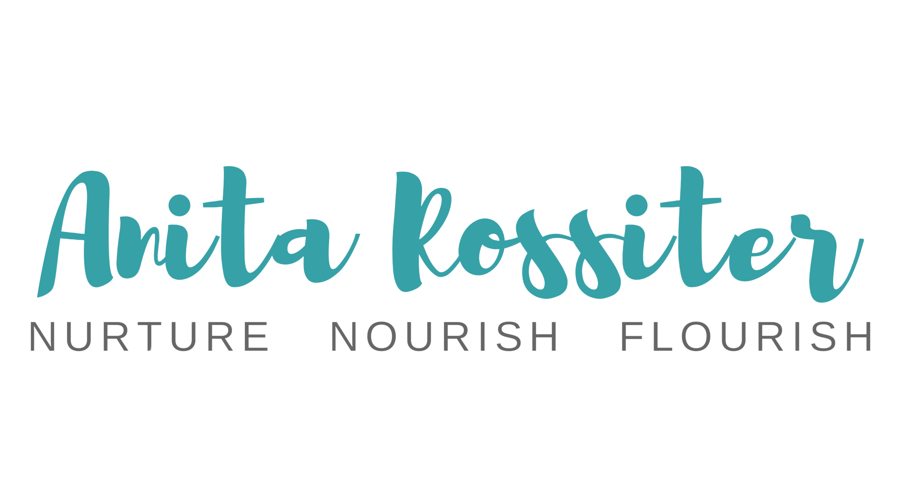
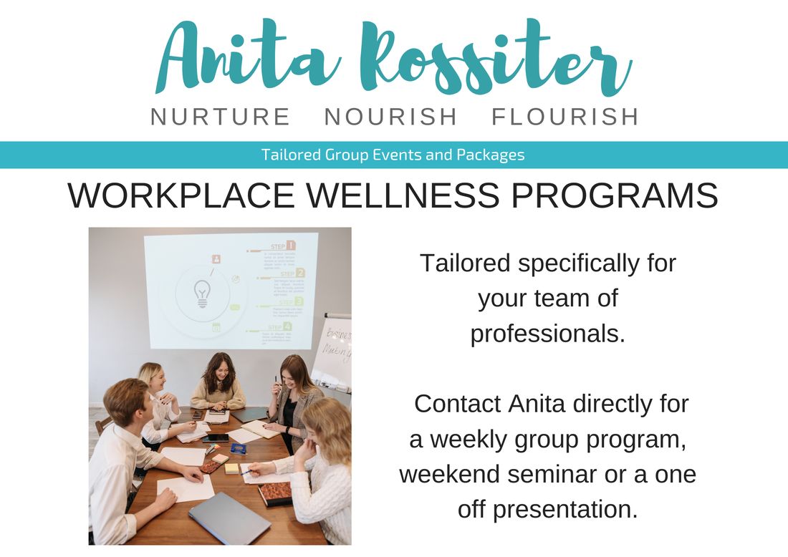
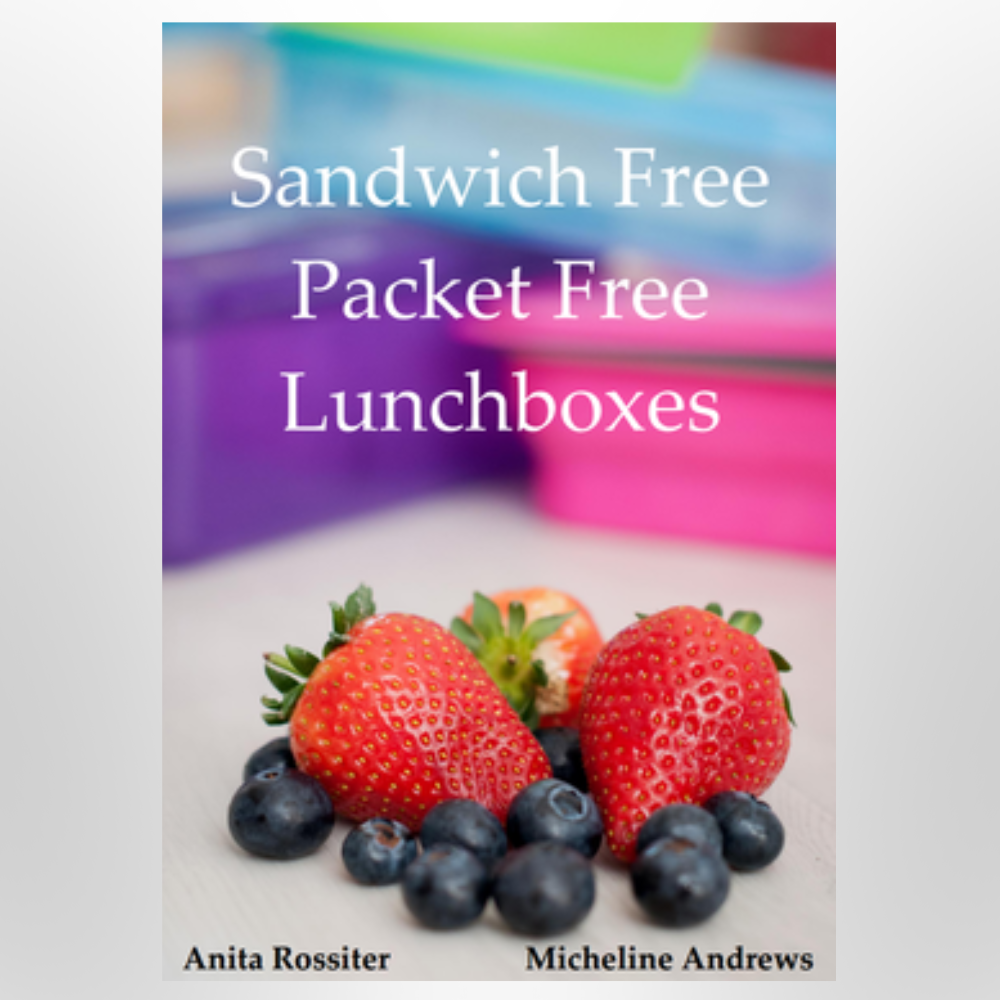

Families wanting healthier habits
Support for parents who want simpler meals, better lunchboxes, healthier home routines and more confidence with food choices.

Nurture Nourish Flourish
Holistic nutrition, health coaching, workplace wellness and practical education with Anita Rossiter.
A discovery call may be available through Anita's online booking diary if you would like to talk through your needs first.
Anita Rossiter is a holistic nutrition consultant, stress coach, public speaker, author, scientist, podcaster and mum.
Anita spent years studying and working across science, nuclear medicine, diagnostic imaging and nutrition before personal and family health challenges led her deeper into post-graduate nutrition and health coaching.
Her approach is holistic. She looks at food, gut health, stress, sleep, toxins, family context, psychology, behaviour and the practical realities of sustainable change.
Anita works with people who want practical, well-explained support for everyday health decisions, not a one-size-fits-all plan.
Support for parents who want simpler meals, better lunchboxes, healthier home routines and more confidence with food choices.
A holistic look at food, stress, sleep, gut health, lifestyle and the small changes that can build better energy over time.
Clear education that helps you make informed decisions for yourself and your family, including food, habits and your home environment.
Health education for teams, schools, retreats and community groups who want useful, engaging sessions with practical takeaways.
Goal-setting, coaching and accountability for people who want support to make changes that feel realistic in real life.
Anita considers nutrition alongside stress, behaviour, family life, environment and the practical realities that shape health.
Maybe you would benefit from a discovery call, a one hour consultation, or a coaching package tailored to you and your requirements.
Anita can chat face-to-face, via Zoom, or on the phone. She works with families and individuals locally as well as interstate and internationally.
Follow the booking link to Anita's secure SimpleClinic diary, then choose the option that best matches what you need. If you are not sure where to start, look for the discovery call option in the booking site.
Practical education and support for individuals, families, workplaces, schools and community groups.
One-on-one support to understand symptoms, food choices, gut health, stress and sustainable daily habits.
Coaching packages tailored around your goals, your family and the pace of change that will actually work.
Clear, practical health education for schools, retreats, community groups, families and organisations.
I feel better educated. I am making better decisions for myself and my family when it comes to food and cleaning products, etc...
I enjoyed learning about the "why". Setting goals for the week and supporting each other. Amazing recipes to help make the changes.
I liked our group discussions about all topics, and losing weight because I changed my eating habits.
Anita brings together formal science training, nutrition study, health coaching and practitioner education.
Her background helps her explain health in a way that is grounded, practical and easy to apply at home, at work and in everyday life.

A structured path of learning that provides a holistic education around health, self-intuition and practical change.
Each week, a group meets for 60-90 minutes and explores a topic. At the end of each session, each participant sets a goal to focus on over the coming week.
Would you like Anita to speak at your event?
With diverse experience and knowledge, Anita's personal journey, research and life-changing message has touched and inspired individuals and families across Australia. She regularly engages with community groups, schools and corporate clients and can tailor a presentation or weekly group wellness program to your requirements.
A practical cookbook for families who want fresh, nourishing lunchbox ideas without relying on packets or sandwiches every day.
The cookbook is no longer sold through this site. It is available exclusively through Soltree Wholefoods.

If you want practical support with food, habits, stress, family health or everyday wellbeing, a consultation or discovery call is a good place to start. Anita can help you work out what support makes sense for your situation.
No. Click through to the booking diary and choose the option that feels closest to what you need. If available, the discovery call is a helpful first step when you would like to talk things through before booking a longer consultation.
Yes. Anita offers appointments face-to-face, by Zoom or by phone, so support is available locally, interstate and internationally.
Yes. Anita works with individuals and families, including parents who want practical help with healthier routines, lunchboxes, food choices and the home environment.
Yes. Anita offers seminars, events and group education, including workplace wellness programs that can be tailored to your organisation or community.
Anita will receive your message and can respond with the most suitable next step, whether that is a booking, a discovery call, or a conversation about a group session or event.
Have a question about appointments, workplace wellness, seminars or community education?
Use the enquiry form for general enquiries, workplace sessions, speaking, and collaborations.
Location: Yeppoon, Queensland + online appointments.